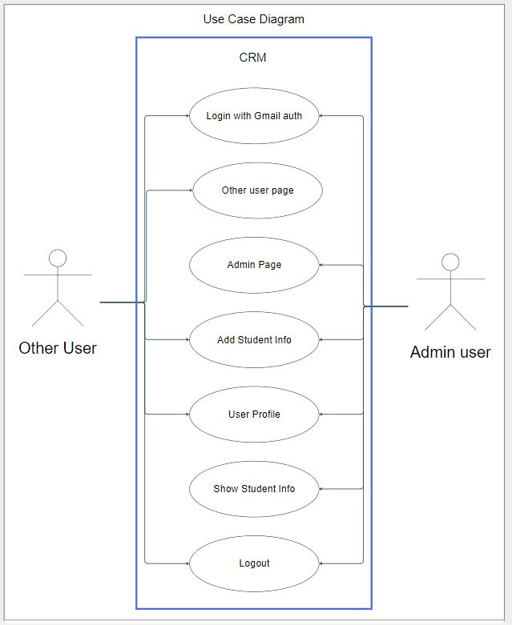
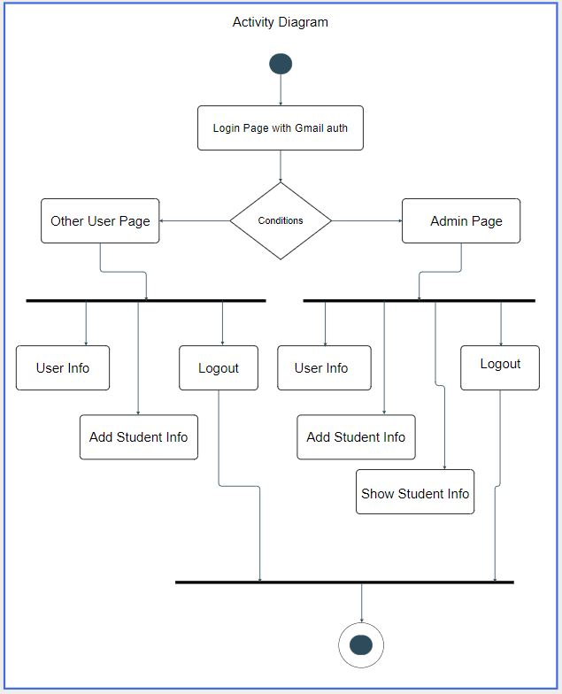
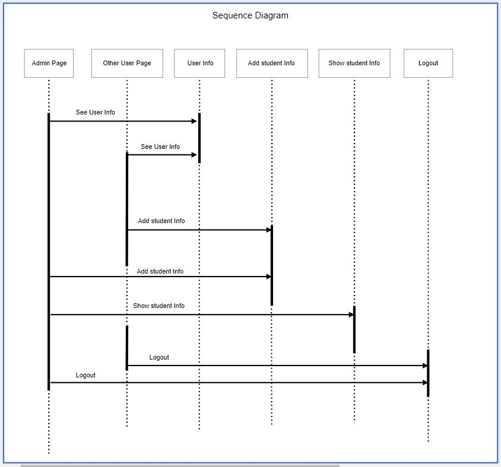
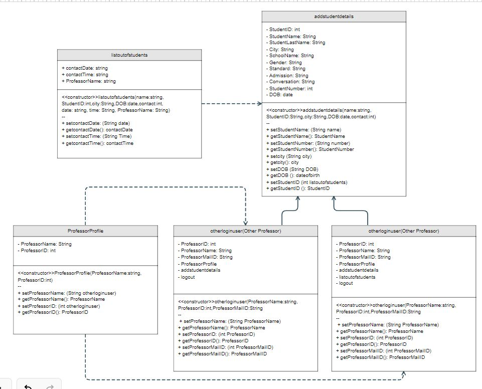

Developed a web-based CRM application for the ICT department of Marwadi University, designed to streamline and manage the entire process from inquiry to enrollment and beyond. It provides efficient management of applicant and inquiry data, facilitating effective communication with prospective students.
The CRM application also offers analytics and reporting features, allowing the university to gain insights and make data-driven decisions — enhancing the efficiency of managing student relationships and contributing to the overall success of the university's operations.
The use case diagram below outlines the two core roles in the system — an Admin user who manages student records, and other authenticated users who can view student information — both gated behind Gmail login.

The activity diagram traces what happens after login: the system branches based on whether the user is an admin or another authenticated user, each following their own path to view or add student info before logging out.

The sequence diagram shows the interaction across pages as an admin views user info, adds and shows student info, and logs out.

And the class diagram documents the underlying data model — student records, professor profiles, and the login flow for both the primary professor and other authenticated users.
